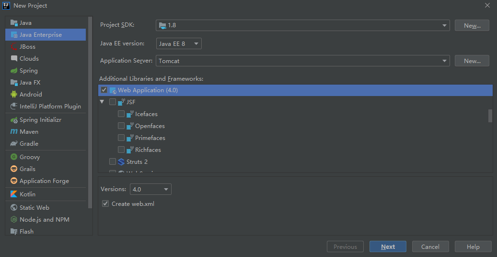

apache-tomcat:
├─bin
│ shutdown.sh catalina.sh start
│ startup.sh catalina.sh stop
│ catalina.sh 启动并传递参数给bootstrap.jar
│ bootstrap.jar 类加载器
│ commons-daemon.jar 服务容器
│ tomcat-juli.jar 日志功能
│ ...
│
├─conf
│ │ catalina.policy
│ │ catalina.properties
│ │ context.xml
│ │ jaspic-providers.xml
│ │ jaspic-providers.xsd
│ │ logging.properties
│ │ server.xml
│ │ tomcat-users.xml
│ │ tomcat-users.xsd
│ │ web.xml
│ │
│ └─Catalina
│ └─localhost
│ *.xml 用于动态部署应用
│
├─lib
│ *.jar
│
├─logs 日志目录
├─temp 暂存目录
├─webapps Web应用目录
└─work 编译后的JSP文件
└─Catalina
└─localhost
JAVA_HOME Java Development Kit installation
JRE_HOME Java Runtime installation
CLASSPATH
JAVA_OPTS Java runtime options used when the "jpda start"
JPDA_TRANSPORT
JPDA_ADDRESS
JPDA_SUSPEND
CATALINA_HOME Catalina "build" directory
CATALINA_BASE For resolving dynamic portions
CATALINA_TMPDIR Temporary directory
CATALINA_OPTS Java runtime options used when the "start" | "run" | "debug"
LOGGING_CONFIG Override Tomcat's logging config file
LOGGING_MANAGER Override Tomcat's logging manager
debug Start Catalina in a debugger
debug -security Debug Catalina with a security manager
jpda start Start Catalina under JPDA debugger
run Start Catalina in the current window
run -security Start in the current window with security manager
start Start Catalina in a separate window
start -security Start in a separate window with security manager
stop Stop Catalina
configtest Run a basic syntax check on server.xml
version What version of tomcat are you running?
java \ -Djava.util.logging.config.file="${CATALINA_BASE}/conf/logging.properties" \ -Djava.util.logging.manager=org.apache.juli.ClassLoaderLogManager \ -Djdk.tls.ephemeralDHKeySize=2048 \ -Djava.protocol.handler.pkgs=org.apache.catalina.webresources \ -Dignore.endorsed.dirs="" \ -classpath "${CATALINA_HOME}/bin/bootstrap.jar;${CATALINA_HOME}/bin/tomcat-juli.jar" \ -Dcatalina.base="${CATALINA_BASE}" \ -Dcatalina.home="${CATALINA_HOME}" \ -Djava.io.tmpdir="${CATALINA_BASE}/temp" \ org.apache.catalina.startup.Bootstrap \ start
此方法用于兼容IDEA Community。
${CATALINA_HOME}/bin/bootstrap.jar、${CATALINA_HOME}/bin/tomcat-juli.jarTomcatResources.java、TomcatRunner.java及基本配置runner.properties、server.xmlServer:
│
├─out
└─src
│ TomcatResources.java
│ TomcatRunner.java
│
└─conf
runner.properties
server.xml
...
server.xml文件完善配置TomcatRunner.java<?xml version="1.0" encoding="UTF-8"?> <!-- Server : 代表整个Tomcat容器 Server.port : 接收关闭指令的端口号 Server.shutdown : 关闭指令名称 --> <Server port="8005" shutdown="SHUTDOWN"> <Service name="Catalina"> <!-- ■■■■■■■■■■■■■■■■■■■■■■■■■■■■■■■■ --> <!-- Connector : 把产生的Request和Response对象传给Engine Connector.port : 端口 Connector.protocol : 协议 HTTP/1.1 : 用户直接访问 AJP/1.3 : 和其他服务通信 Connector.connectionTimeout : 超时时间 Connector.redirectPort : 当资源要求HTTPS而请求是HTTP时，重定向到的端口 --> <Connector port="8008" protocol="HTTP/1.1" connectionTimeout="20000" redirectPort="8443" /> <Connector port="8009" protocol="AJP/1.3" redirectPort="8443" /> <!-- ■■■■■■■■■■■■■■■■■■■■■■■■■■■■■■■■ --> <!-- Engine : 每个Service中仅有一个Engine Engine.name : 用于记录日志时指明身份 Engine.defaultHost : 有且仅有一个 Host.name == Engine.defaultHost --> <Engine name="Catalina" defaultHost="localhost"> <!-- Host Host.name : 在DNS中注册的主机名 Host.appBase : Web应用存放目录，也可指定绝对路径 Host.unpackWARs : 通过解压后的War文件运行Web应用？ Host.autoDeploy : 自动部署？ Host.deployOnStartup : 启动时部署？ --> <Host name="localhost" appBase="webapps" unpackWARs="true" autoDeploy="true"> <!-- Context: 部署一个不在Host.appBase下的应用 Context.docBase : 绝对路径或war包地址 Context.path : 映射路径（自动部署时war包不指定） Context.reloadable : 检查应用修改并自动重载？ --> <Context path="/hello" docBase="C:\Tomcat\Hello" reloadable="true" /> </Host> </Engine> <!-- ■■■■■■■■■■■■■■■■■■■■■■■■■■■■■■■■ --> </Service> </Server>
在特定事件发生时执行特定的操作，可以在Server、Engine、Host或Context中。
<?xml version="1.0" encoding="UTF-8"?> <Server ...> <!-- 记录Tomcat信息（必须为第一个监听器） --> <Listener className="org.apache.catalina.startup.VersionLoggerListener" /> <!-- 加载Apache Portable Runtime --> <Listener className="org.apache.catalina.core.AprLifecycleListener" SSLEngine="on" /> <!-- （Tomcat7）初始化JSP引擎Jasper --> <Listener className="org.apache.catalina.core.JasperListener" /> <!-- 预防内存泄露 --> <Listener className="org.apache.catalina.core.JreMemoryLeakPreventionListener" /> <!-- 初始化全局资源 --> <Listener className="org.apache.catalina.mbeans.GlobalResourcesLifecycleListener" /> <!-- 当Web应用因内存泄露而要停止时会触发线程池中线程的更新 只有当该应用的 Context.renewThreadsWhenStoppingContext = true 才会有效 --> <Listener className="org.apache.catalina.core.ThreadLocalLeakPreventionListener" /> <!-- ... -->
<GlobalNamingResources ...> <!-- Environment --> <Environment name="PI" value="3.14" type="java.lang.Float" description="圆周率" override="false" /> <!-- Resource --> <Resource name="UserDatabase" auth="Container" type="org.apache.catalina.UserDatabase" description="可以更新和保存的用户数据库" factory="org.apache.catalina.users.MemoryUserDatabaseFactory" pathname="conf/tomcat-users.xml" /> </GlobalNamingResources>
一个存储用户名和密码的“数据库”再加上一个枚举列表。
<Realm className="org.apache.catalina.realm.LockOutRealm"> <Realm className="org.apache.catalina.realm.UserDatabaseRealm" resourceName="UserDatabase"/> </Realm>
<!-- AccessLogValve.directory : 日志记录目录 AccessLogValve.prefix : 文件名前缀 AccessLogValve.suffix : 文件名后缀 AccessLogValve.pattern : %l：远程的逻辑用户名，默认为"-" %u：授权的远程用户名，默认为"-" %t：访问时间 %r：请求行 %s：响应状态码 %b：响应体长度 --> <Valve className="org.apache.catalina.valves.AccessLogValve" directory="logs" prefix="localhost_access_log" suffix=".txt" pattern="%h %l %u %t "%r" %s %b" />

Project:
├─src
│ *.java
│
└─web
│ index.jsp
│
├─static
│ *.css
│ *.js
│
└─WEB-INF
│ web.xml
│
├─classes
│ *.class
│
├─jsp
│ *.jsp
│
└─lib
*.jar
部署项目有以下三种方式。
1、直接将项目放置到webapps目录下
2、修改conf/server.xml文件
<!-- ... --> <Host ...> <!-- ↓↓↓新增部分↓↓↓ --> <Content docBase="{系统目录}" path="{映射URL}"/> <!-- ↑↑↑新增部分↑↑↑ --> </Host> </Engine> </Service> </Server>
3、新建conf/Catalina/localhost/{映射URL}.xml文件
<!-- ↓↓↓新增部分↓↓↓ --> <Content docBase="{系统目录}"/> <!-- ↑↑↑新增部分↑↑↑ -->
src/com.example.HelloServlet
package com.example; import javax.servlet.*; import java.io.IOException; import java.io.PrintWriter; // 尽量不要在Servlet中定义成员变量 public class HelloServlet implements Servlet { /** * （生命周期）仅在Servlet被创建时执行 */ @Override public void init(ServletConfig servletConfig) throws ServletException { } /** * （生命周期）每次Servlet被访问时执行 */ @Override public void service(ServletRequest request, ServletResponse response) throws ServletException, IOException { PrintWriter writer = response.getWriter(); writer.print("Hello Servlet"); writer.close(); } /** * （生命周期）仅在Servlet被销毁时（服务器正常关闭时）执行 */ @Override public void destroy() { } /** * 获取Servlet的Config对象 */ @Override public ServletConfig getServletConfig() { return null; } /** * 获取Servlet的信息 */ @Override public String getServletInfo() { return null; } }
web/WEB-INF/web.xml
<!-- ... --> <servlet> <servlet-name>NameOf_HelloServlet</servlet-name> <servlet-class>com.example.HelloServlet</servlet-class> <!-- <load-on-startup>{value}</load-on-startup> 【指定Servlet何时加载】 {value} < 0: 第一次被访问时创建（默认） {value} ≥ 0: 服务器启动时创建 --> </servlet> <servlet-mapping> <servlet-name>NameOf_HelloServlet</servlet-name> <url-pattern>/hello</url-pattern> </servlet-mapping> </web-app>
src/com.example.HelloServlet
package com.example; import javax.servlet.*; import javax.servlet.annotation.WebServlet; import java.io.IOException; import java.io.PrintWriter; //@WebServlet(urlPatterns = {"/hello"}) @WebServlet("/hello") public class HelloServlet implements Servlet { @Override public void init(ServletConfig servletConfig) throws ServletException { } @Override public void service(ServletRequest request, ServletResponse response) throws ServletException, IOException { PrintWriter writer = response.getWriter(); writer.print("Hello Servlet"); writer.close(); } @Override public void destroy() { } @Override public ServletConfig getServletConfig() { return null; } @Override public String getServletInfo() { return null; } }